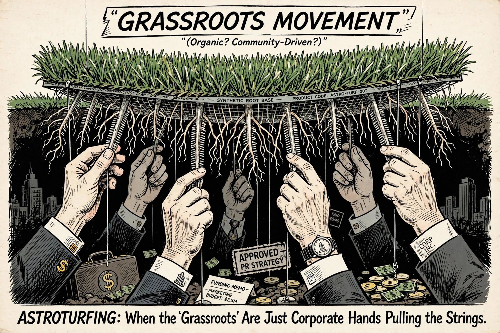

Astroturfing
Astroturfing is the practice of masking the sponsors of a message or organization (such as political, advertising, religious, or public relations groups) to make it appear as though it originates from, and is supported by, grassroots participants. It is a practice intended to give organizations the appearance of a grassroots movement that arises naturally, spontaneously, and locally, when in fact the effort is centrally organized, funded, or directed.

Etymology
The term is a derivation of AstroTurf, a brand of synthetic carpeting designed to resemble natural grass, as a play on the word "grassroots". The term was reportedly coined in 1985 by United States Senator Lloyd Bentsen of Texas, who, when asked about a flood of letters he had received, remarked that "a fellow from Texas can tell the difference between grass roots and Astroturf."
Techniques
Astroturfing techniques include the use of front groups, organizations that purport to serve a public cause while actually serving the interests of a sponsor; the creation of fake blogs and social media accounts; the hiring of individuals to pose as ordinary citizens ("sockpuppets"); and search engine optimization campaigns designed to displace genuinely independent voices. On the Internet, astroturfers may use software to mask their identity, and single individuals may operate many accounts simultaneously. Corporations and political campaigns have also paid crowds to attend rallies and demonstrations, a practice sometimes called "rent-a-crowd".
History
Although the term is modern, the practice is old. In the early twentieth century, tobacco companies organized apparently spontaneous campaigns by farmers and merchants to oppose restrictions on smoking. The tobacco industry later famously funded front organizations such as the Tobacco Institute to dispute the scientific consensus on smoking and health. In the 1990s and 2000s, similar tactics were documented in campaigns concerning climate change, telecommunications policy, and healthcare reform.
Legal status and regulation
In many jurisdictions, astroturfing that involves undisclosed paid endorsements violates consumer protection law. In the United States, the Federal Trade Commission's endorsement guides require disclosure of material connections between endorsers and advertisers. The European Union's Unfair Commercial Practices Directive likewise prohibits falsely representing oneself as a consumer. Enforcement has proven difficult, particularly for anonymous online campaigns.